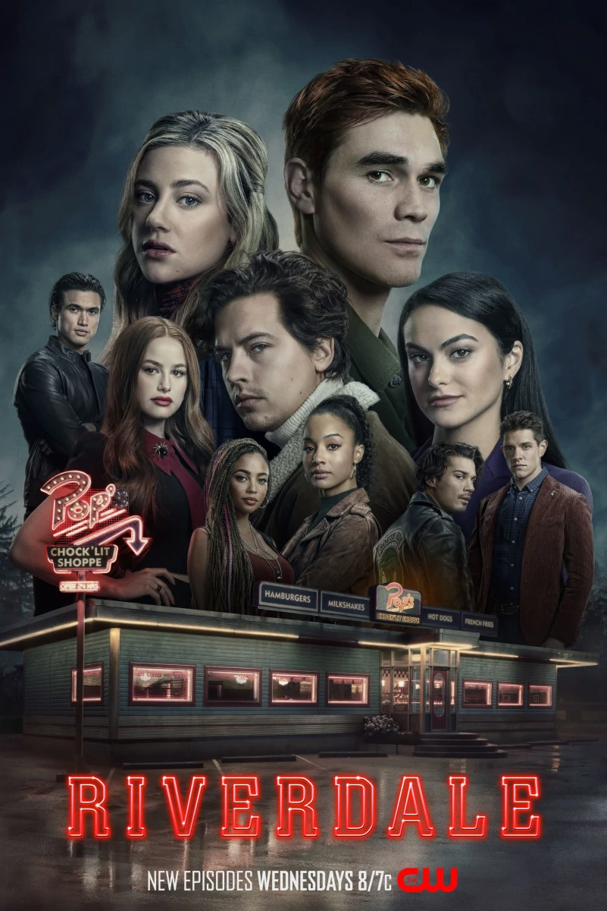

<!DOCTYPE html>
<html>
<head>
<title></title>
</head>
<body>

</body>
</html>

<center>
    <font size="10" color="#E8BEEE" >Riverdale</font>
    <br><br><br>

    <th></th> </center>


    
    Riverdale ir amerikāņu pusaudžu drāmas televīzijas seriāls, kura pamatā ir Ārčija komiksu varoņi . Sēriju filmai The CW adaptēja Archie Comics galvenais radošais darbinieks Roberto Aguirre-Sacasa , un to veido Warner Bros. Television un CBS Studios sadarbībā ar Berlanti Productions un Archie Comics. Ideja tika iecerēta kā spēlfilmas adaptācija uzņēmumam Warner Bros. Pictures , un tā tika pārdomāta kā televīzijas seriāls Fox . 2015. gadā projekta izstrāde pārcēlās uz The CW, kur sērija tika pasūtīta izmēģinājuma vajadzībām. Filmēšana notiek Vankūverā ,Britu Kolumbija . 